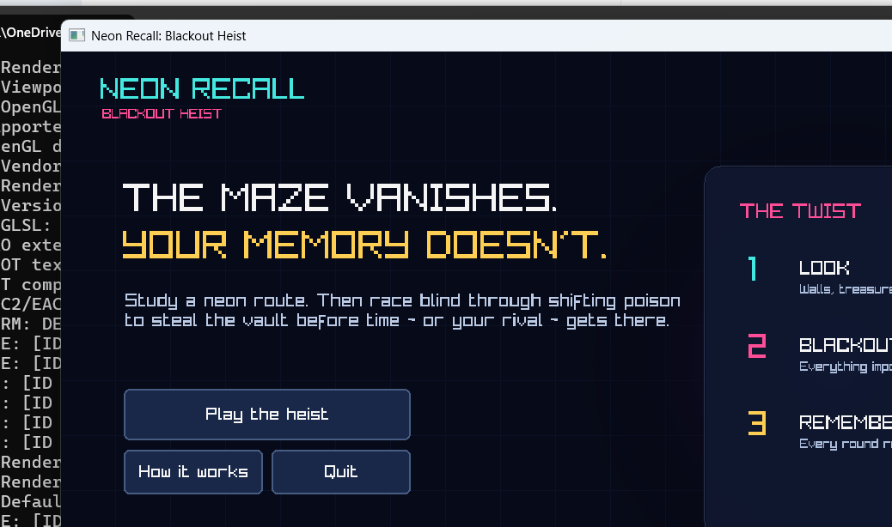

Memorize
Study walls, poison, the central vault, and your position. There is no suggested solution path.
C++20 / RAYLIB / WINDOWS
Study a neon labyrinth, memorize the danger, then race through total darkness to steal the central vault—solo or against a local rival.

THE CORE LOOP
Every round alternates between short observation windows and complete spatial blackout. The maze remains locked; the poison does not.
Study walls, poison, the central vault, and your position. There is no suggested solution path.
The maze, player, poison, and treasure disappear. Collision still exists. Move entirely from memory.
Arrive first for the largest score, then draft a personal buff before the next procedural round.
TWO WAYS TO PLAY
Beat increasingly dense hazard layouts, preserve health, and build a score across ten fresh mazes. Disable buffs for a pure memory challenge.
BUILD YOUR EDGE
UNDER THE NEON
Rendering is separated from a deterministic, window-free simulation model so generation, fairness, scoring, and state transitions can be tested automatically.
Randomized depth-first carving and controlled loop insertion create connected, replayable mazes.
Every poison placement is rejected unless both players retain a fully poison-free route.
A topology signature verifies that walls never change between blackout frames in one round.
Headless tests cover connectivity, deterministic generation, multiplayer buffs, and hundreds of hazard layouts.
READY FOR THE BLACKOUT?
Windows x64 · Free portfolio release · No installer required